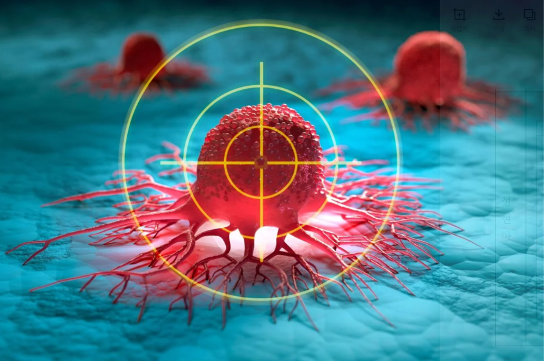

논문 그림 또는 스캔 이미지를
아래 파일명으로 저장 후 업로드
week3_article01.png
아래 파일명으로 저장 후 업로드
논문의 Fig. 또는 스캔 이미지를 week3_article01.png 파일명으로 저장 후 index.html과 같은 폴더에 업로드하면 자동 표시됩니다.
세균을 종양 사냥꾼으로 — 암세포 내부에서 항암제 직접 방출
Scientists Turn Bacteria Into Tiny Tumor Hunters That Kill Cancer암세포가 모여 있는 종양 내부는 산소가 거의 없고 영양이 풍부한 환경입니다. 중국 연구팀은 이 특성을 이용해, 원래 장에 사는 무해한 세균(E. coli Nissle 1917)을 유전공학으로 개조하여 종양을 스스로 찾아가 항암제를 현장에서 직접 만들어 방출하도록 설계했습니다. 쥐 실험에서 효과가 확인됐으나, 아직 동물 실험 단계이며 인체 적용까지는 추가 안전성 검증이 필요합니다.
원문 읽기